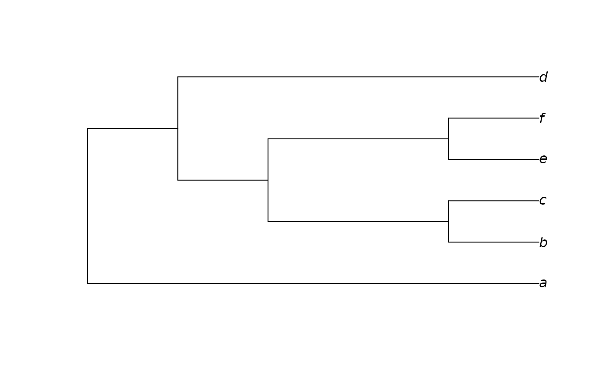

Constructs an approximation to a neighbour-joining tree, modified in order to be consistent with a constraint. Zero-length branches are collapsed at random.
ConstrainedNJ(dataset, constraint, weight = 1L, ratio = TRUE, ambig = "mean")A phylogenetic data matrix of phangorn class phyDat,
whose names correspond to the labels of any accompanying tree.
Either an object of class phyDat, in which case returned
trees will be perfectly compatible with each character in constraint;
or a tree of class phylo, in which each node in constraint will occur in
the returned tree.
See vignette
for further examples.
Numeric specifying degree to up-weight characters in
constraint.
Settings of ambig and ratio to be used when
computing Hamming() distances between sequences.
ConstrainedNJ() returns a tree of class phylo.
Other tree generation functions:
GenerateTree,
NJTree(),
TreeNumber,
TrivialTree
dataset <- MatrixToPhyDat(matrix(
c(0, 1, 1, 1, 0, 1,
0, 1, 1, 0, 0, 1), ncol = 2,
dimnames = list(letters[1:6], NULL)))
constraint <- MatrixToPhyDat(
c(a = 0, b = 0, c = 0, d = 0, e = 1, f = 1))
plot(ConstrainedNJ(dataset, constraint))
